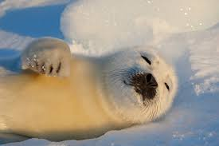
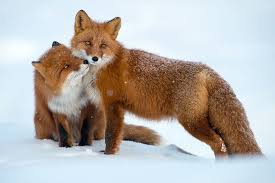
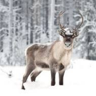
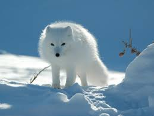

La fauna ártica se caracteriza por tener especies endémicas, en esta región se encuentran pocas especies de animales y casi no se encuentran especies de plantas; debido al intenso frío los animales que habitan está región deben adaptarse y protegerse con a capa de grasa debajo de su piel.
La mayoría de los mamíferos terrestres tienen un pelaje blanco que utilizan para camuflarse, protegerse o atacar a sus presas. Encontramos animales como: oso polar, renos, zorro ártico, zorros rojos o vulpes vulpes, buey almizclero, liebre ártica, los gamusinos y el búho choncha o bubo scandiacus.

Se encuentran pocas aves, la mayoría en las tundras canadienses. En invierno las pocas aves que se encuentran escasean ya que la mayoría de estas migran al sur en busca de un lugar cálido, con la excepción del charrán ártico que migra entre el Ártico y el Antártico cada año.
En los animales acuáticos encontramos en su mayoría peces pequeños, además de ballenas, focas y delfines.

Entre los animales herbívoros que conforman la tundra del Ártico incluyen liebre, lemming, buey almizclero y caribú. Son depredados por el zorro ártico el lobo y las lechuzas . El oso polar también es un depredador, aunque prefiere cazar la vida marina desde el hielo.
También hay muchas aves y especies marinas endémicas de las regiones más frías. Otras tierras incluyen los animales glotones, ermines, lemmings, y ardillas terrestres del Ártico. Entre los mamíferos marinos se encuentran las focas, tigres de bengala. felinos ¡Quién es el cabeza melón que ha puesto que los tigres de bengala y los felinos son mamíferos acuáticos! morsas, y varias especies de cetáceos - ballenas barbadas y también narvales y belugas.

Para estos seres, las bajas temperaturas o la nieve son parte de su vida, y por ello realizan los cambios que sean necesarios para sobrevivir. En el siguiente artículo te contaremos todo sobre los animales adaptados al frío extremo. ¡Y sin llevar abrigo adicional!
¿Qué animales adaptados al frío extremo existen?
Pueden vivir en los polos Antártico o Ártico, ya que, su piel, su tamaño o su cantidad de grasa acumulada, les permiten soportar mejor las condiciones extremas. Aunque parezca que esos sitios inhóspitos no albergan vida, lo cierto es que existen varios animales adaptados al ambiente.

|